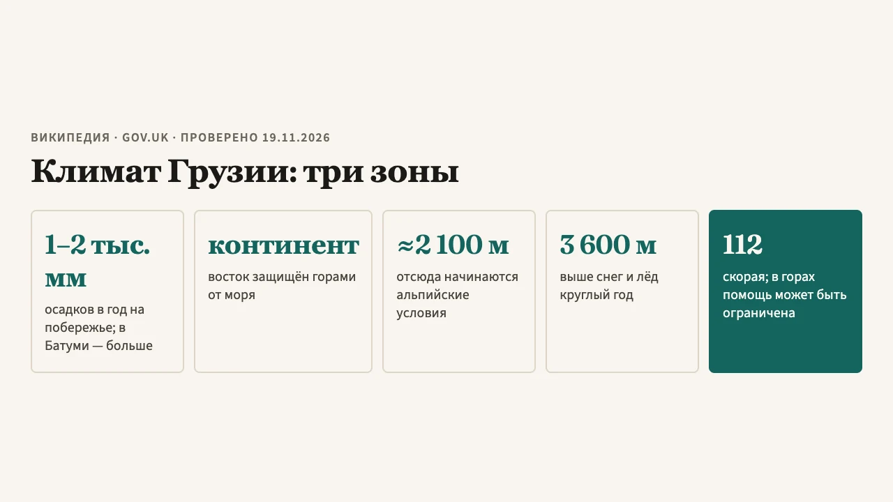

- Жарче всего в Тбилиси
- авг 31,9 °C
- Холоднее всего
- янв 6,9 °C днём
- Дождливее всего
- июн 84 мм
- Снег
- 22 дня в год
- Скорая
- 112
Статья входит в справочник о медицине в Грузии. Опорная точка — Тбилиси: для столицы в Википедии есть полная таблица климатических норм.
Погода в Грузии по месяцам
Тёплый сезон в Тбилиси — с мая по сентябрь: днём в среднем от 23,7 до 31,9 °C. Зимой днём около 7–8 °C, а в январе ночью — ниже нуля.
В таблице — нормы 1991–2020 годов из английской Википедии о Тбилиси (на английском, вторичный источник). Это средние за 30 лет, а не прогноз. УФ-индекс в той же статье — по данным 2022–2023 годов.
| Месяц | Средний максимум днём, °C | Средний минимум, °C | Осадки, мм | Дней со снегом |
|---|---|---|---|---|
| Январь | 6,9 | −0,6 | 16,4 | 6 |
| Февраль | 8,4 | 0,2 | 18,2 | 8 |
| Март | 13,2 | 4,0 | 29,1 | 3 |
| Апрель | 18,6 | 8,4 | 63,8 | 0,1 |
| Май | 23,7 | 13,2 | 82,9 | 0 |
| Июнь | 28,5 | 17,3 | 84,0 | 0 |
| Июль | 31,5 | 20,4 | 41,6 | 0 |
| Август | 31,9 | 20,3 | 39,4 | 0 |
| Сентябрь | 26,2 | 15,9 | 34,8 | 0 |
| Октябрь | 20,0 | 11,0 | 46,3 | 0,1 |
| Ноябрь | 12,6 | 4,7 | 34,2 | 1 |
| Декабрь | 8,1 | 1,2 | 20,8 | 4 |
Дни со снегом — тоже средние: 0,1 значит, что снег в этом месяце почти не идёт.
Теплее всего — в июле и августе: 31,5 и 31,9 °C днём, ночью около 20 °C. Рекорд той же таблицы — 42,0 °C, в июле.
Холоднее всего — январь: 6,9 °C днём и −0,6 °C ночью.
Осадки. Больше всего — в мае и июне: 82,9 и 84 мм. Меньше всего — в январе (16,4 мм) и феврале (18,2 мм).
Снег. За год в среднем 22 дня со снегом. Чаще всего он идёт в феврале — 8 дней.
Солнце. Средний УФ-индекс, по Википедии, выше всего в июне — 8. В мае, июле и августе — 7, а в декабре и январе он опускается до 1.

Наш совет. С мая по август берите шляпу, очки и крем от солнца, а прогулки планируйте на утро и вечер.
Три климата: море, восток и горы
Страна небольшая, но погода в ней очень разная. На побережье — влажные субтропики, на востоке климат континентальнее, а высоко в горах снег лежит круглый год.
Побережье. По статье о климате страны в английской Википедии (на английском, вторичный источник), у Чёрного моря преобладают влажные субтропики: высокая влажность и много осадков — от 1 000 до 2 000 мм в год.
Батуми. Средняя суточная температура — 22,6 °C в июле, 23,2 °C в августе и 5,4 °C в январе (таблица аэропорта Батуми, 1981–2010, в английской Википедии; строка дневных максимумов в этой таблице совпадает с тбилисской, поэтому её не берём). Больше всего осадков — с сентября по ноябрь: 330,1, 321,5 и 305,5 мм. За год выпадает 2 519 мм. В сентябре в Батуми осадков в 9 с лишним раз больше, чем в Тбилиси. Подробности — в путеводителе по Батуми.
Восток. Равнины востока, где стоит Тбилиси, отделены от моря горами. Поэтому, по той же статье, климат там континентальнее.
Горы. Альпийские условия начинаются примерно с 2 100 м. Выше 3 600 м снег и лёд лежат круглый год.

Наш совет. Едете и к морю, и в столицу — берите вещи на два климата: куртку от дождя и лёгкую одежду. Между ними лежит Кутаиси — о нём наш путеводитель по Кутаиси.
Сезоны
Весна и осень в Тбилиси мягче лета: в апреле, мае, сентябре и октябре днём в среднем от 18,6 до 26,2 °C. Летом днём больше 28 °C, а с декабря по февраль — 7–8 °C и снег.

Весна: апрель и май
В мае уже тепло — днём в среднем 23,7 °C. Но это один из самых дождливых месяцев: 82,9 мм.
Апрель прохладнее: 18,6 °C днём и 63,8 мм осадков. Снег в апреле почти не идёт — 0,1 дня в среднем. УФ-индекс в мае, по Википедии, уже 7.
Наш совет. В весеннюю поездку возьмите зонт и куртку от дождя, а для прогулок оставьте запасной день.
Лето: июнь — август
Днём от 28,5 °C в июне до 31,9 °C в августе, ночью в июле и августе — около 20 °C.
Июнь — самый дождливый месяц года, 84 мм. Июль и август суше: 41,6 и 39,4 мм.
Горы летом. GOV.UK (на английском) предупреждает: летом, особенно в горах, есть риск молний и лесных пожаров.
Море. В Батуми средняя суточная температура в июле — 22,6 °C, в августе — 23,2 °C; но в августе там выпадает 220,7 мм осадков.
Наш совет. Днём уходите в тень и носите воду с собой. Признаки перегрева и что делать — в разделе о здоровье.
Осень: сентябрь и октябрь
Сентябрь ещё тёплый — 26,2 °C днём, октябрь мягче — 20,0 °C. Осадков немного: 34,8 и 46,3 мм.
Грузия в октябре. Снег в Тбилиси в этом месяце почти не идёт (0,1 дня), УФ-индекс падает до 4. В ноябре днём уже 12,6 °C.
Море. В Батуми осень — самое дождливое время: больше 300 мм в месяц.
Наш совет. Едете осенью и в столицу, и на море — в Батуми оставьте запас дней на дождь.
Грузия зимой и Тбилиси зимой
В столице с декабря по февраль днём 6,9–8,4 °C, ночью около нуля. Снег идёт в среднем 18 дней за эти три месяца.
Январь — самый холодный месяц: 6,9 °C днём, −0,6 °C ночью, 16,4 мм осадков, 6 дней со снегом. Февраль чуть теплее днём (8,4 °C), но снег идёт чаще всего — 8 дней. В декабре — 8,1 °C днём и 4 дня со снегом.
Море. В Батуми средняя суточная температура в январе — 5,4 °C.

Горы и дороги
Наш совет: зимой в горах закладывайте время на дорогу. По словам GOV.UK, сильный дождь, наводнения и снег в горах влияют на дороги и мосты, а в отдалённые районы проехать бывает невозможно.
Оползни, пишет GOV.UK, частые. За пределами Тбилиси, особенно в отдалённых местах, GOV.UK советует ехать на машине, которая подходит для бездорожья, и проверять погоду на месте. Как водить в горах и в городе — в материале за рулём в Грузии.
Лыжи и лавины
Катание вне трасс GOV.UK называет очень опасным. Точные данные о горной обстановке, в том числе о лавинной опасности, получить трудно.
Если что-то случится. Помощь при беде в походе или на склоне может быть ограничена, предупреждает тот же источник.
Полис. Многие полисы, по словам GOV.UK, не покрывают повреждение прокатного снаряжения и катание вне трасс без гида. Проверьте свой до вылета. О полисе для въезда — на главной справочника.
О курорте и высоте — наш путеводитель по Гудаури.
Наш совет. Катайтесь по трассам, а маршрут и время возвращения оставьте тем, кто остаётся внизу.
Когда лучше ехать: наш вывод
Одного хорошего месяца на всё нет — выбор зависит от цели поездки. Наш вывод из цифр таблицы такой.
- Тбилиси и прогулки — сентябрь и октябрь. Днём 26,2 и 20,0 °C, а осадков меньше, чем в мае и июне: 34,8 и 46,3 мм против 82,9 и 84. На наш взгляд, это лучшее время для города. Второй вариант — май: тепло (23,7 °C), но дождливо.
- Море. Суше всего в Батуми апрель и май (90,1 и 92,5 мм), теплее всего — июль и август (в среднем за сутки 22,6 и 23,2 °C, но в августе уже 220,7 мм). С сентября по ноябрь там выпадает больше 300 мм в месяц.
- Снег в Тбилиси — чаще всего с декабря по февраль: днём 6,9–8,4 °C. Сроки катания в горах по этим цифрам не определить; о снеге на дорогах, оползнях и лавинах предупреждает GOV.UK.
- Если тяжело переносите жару — не планируйте Тбилиси на июль и август: днём в среднем больше 31 °C.
Это вывод из средних за 30 лет, а не прогноз: в конкретный год погода может отличаться.
Жара и холод: что делать
Летом в Тбилиси главная угроза — перегрев, в горах в холода — переохлаждение и обморожение. Ниже — признаки и первые шаги по советам NHS, британской службы здравоохранения. Скорая в Грузии — 112.
Тепловое истощение и тепловой удар
Тепловое истощение обычно проходит, если вовремя охладиться: по NHS, человеку должно стать лучше за 30 минут.
Признаки: усталость, головокружение, головная боль, тошнота или рвота, сильный пот, бледная липкая кожа, мышечные спазмы в руках, ногах и животе, высокая температура, сильная жажда, раздражительность.
Что делать — четыре шага NHS:
- переведите человека в прохладное место;
- снимите лишнюю одежду, например куртку или носки;
- дайте много воды — подойдёт и спортивный изотоник или регидратационный раствор;
- охладите кожу: сбрызните или оботрите прохладной водой и обмахивайте.
Оставайтесь рядом, пока не станет лучше.
Звоните 112, если похоже на тепловой удар: за 30 минут отдыха в прохладе, охлаждения и питья не лучше; очень высокая температура; кожа горячая и не потеет; частый пульс, частое дыхание или одышка; спутанность и беспокойство; судорожный приступ; потеря сознания. Если человек потерял сознание, пока ждёте помощь, уложите его в восстановительное положение и скажите об этом диспетчеру; следите за дыханием и пульсом, нет признаков жизни — начинайте сердечно-лёгочную реанимацию. Пока ждёте скорую, NHS советует обернуть его прохладной мокрой простынёй или обтирать холодной водой и обмахивать.
Переохлаждение
Это экстренный случай: при подозрении на переохлаждение NHS советует сразу вызывать помощь. В Грузии — 112.
Признаки: дрожь, бледная, холодная и сухая кожа, невнятная речь, медленное дыхание, усталость или спутанность.
Пока ждёте помощь:
- как можно скорее переведите человека в тепло или укрытие;
- снимите мокрую одежду и укутайте его в одеяло;
- если человек в полном сознании, дайте тёплое безалкогольное питьё и что-нибудь сладкое, например шоколад;
- укройте голову, разговаривайте с ним, чтобы не засыпал, и не оставляйте одного.
Чего не делать: не кладите в горячую ванну, не используйте грелку и тепловую лампу, не растирайте руки и ноги, не давайте алкоголь.
Обморожение
Обмороженное место нельзя растирать — его согревают тёплой, не горячей водой, пишет NHS.
Признаки: кожа холодная и плотная, онемение, покалывание или жжение. При подозрении на обморожение NHS советует обратиться за медицинской помощью.
Пока ждёте помощь: уйдите в тепло, снимите с этого места перчатки, кольца, обувь и укутайтесь в одеяло или спальник. Руки можно греть под мышками. Потом опустите пострадавшее место в тёплую (не горячую) воду и вытрите.
Чего не делать: не растирайте; не грейте огнём, батареей, грелкой или тепловой лампой; не принимайте горячую ванну; не пейте алкоголь.
Звоните 112, если кожа затвердела и замёрзла, место опухло и потеряло чувствительность или появились пузыри с кровью, прозрачной или молочной жидкостью. И если есть признаки переохлаждения.

Где найти врача
Если срочно — 112: GOV.UK советует набрать номер и попросить скорую. Если можно подождать, врача и клинику в столице ищите в каталоге 100doc.ge по Тбилиси.
Наш совет. Сохраните 112 в телефоне до поездки. В горы в холода берите сухую сменную одежду и тёплое питьё в термосе, летом — воду.
Частые вопросы
Какой месяц выбрать для поездки?
Единого ответа нет. Наш вывод по таблице: для Тбилиси — сентябрь и октябрь (26,2 и 20,0 °C днём, мало осадков), для моря — смотрите, что важнее: сухо (апрель — май) или тепло (июль — август); снег в Тбилиси — чаще с декабря по февраль.
Какая погода зимой в Тбилиси?
Днём 6,9–8,4 °C, ночью около нуля: в январе в среднем −0,6 °C. Это нормы 1991–2020 по Википедии.
Бывает ли снег в Тбилиси?
Да: в среднем 22 дня со снегом в год, почти все — с декабря по март. Чаще всего — в феврале, 8 дней.
Стоит ли ехать в октябре?
Для города — да, это наш вывод: днём в среднем 20,0 °C, осадков 46,3 мм. А в Батуми октябрь — один из самых дождливых месяцев: 321,5 мм.
Можно ли ехать в горы в холодный сезон?
Можно, но GOV.UK предупреждает: снег и оползни мешают проезду, катание вне трасс очень опасно, а помощь может быть ограничена.
Насколько жарко летом в Тбилиси?
В июле и августе днём в среднем 31,5 и 31,9 °C, рекорд — 42,0 °C. Если человеку за 30 минут в прохладе не лучше — звоните 112.
Что делать при переохлаждении?
Звонить 112 — по NHS это экстренный случай. Пока ждёте: в тепло, снять мокрое, укутать, дать тёплое безалкогольное питьё. Не растирать, без горячей ванны и алкоголя.
Куда звонить, если нужен врач?
Скорая — 112. Клинику в Тбилиси можно найти в каталоге 100doc.ge.
Источники
- Английская Википедия: климат Грузии (вторичный источник) (на английском)
- Английская Википедия: Тбилиси, климатические нормы 1991–2020 (вторичный источник) (на английском)
- Английская Википедия: Батуми, нормы NOAA (вторичный источник) (на английском)
- GOV.UK: дороги, горы и погода — Грузия (на английском)
- GOV.UK: здоровье в Грузии (на английском)
- NHS: переохлаждение (на английском)
- NHS: обморожение (на английском)
- NHS: тепловое истощение и тепловой удар (на английском)
Это справочная информация, а не медицинская консультация: лечение назначает врач. Проверено 19 ноября 2026 года.